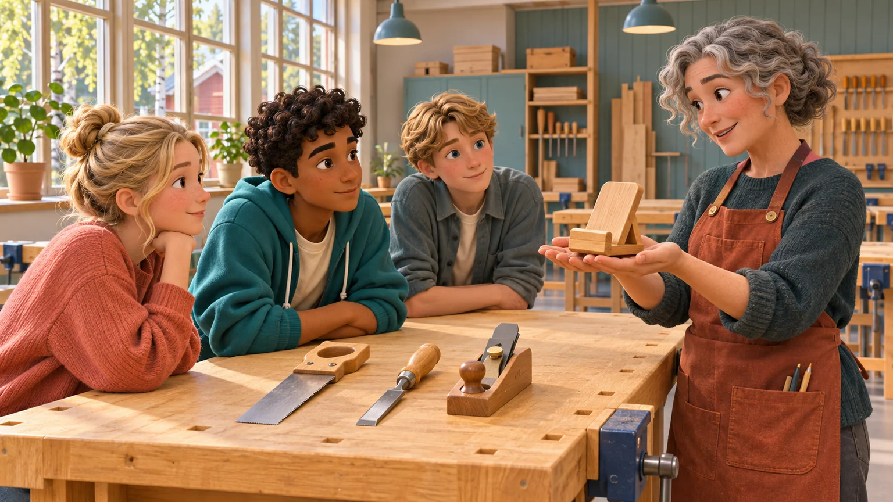
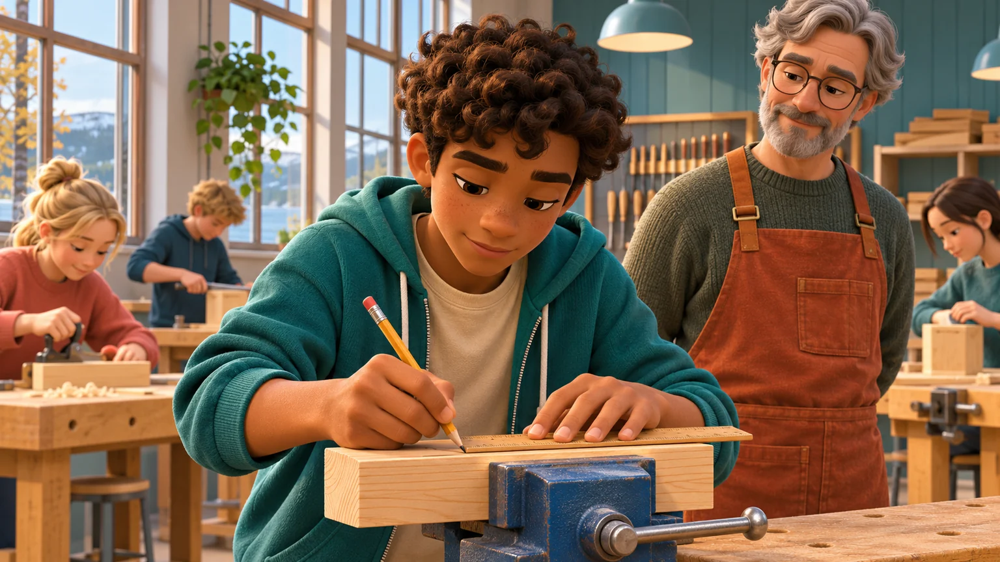
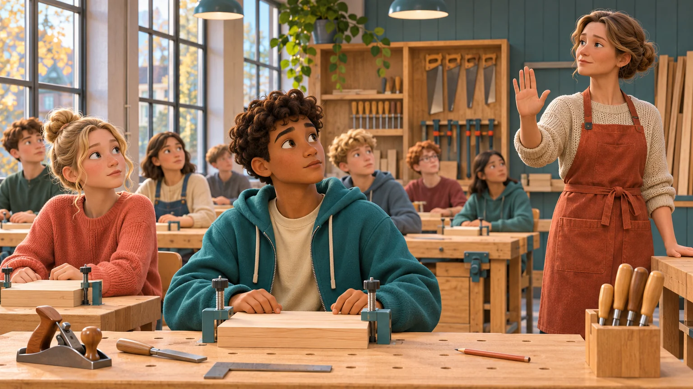
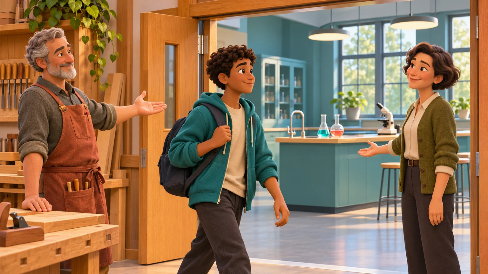
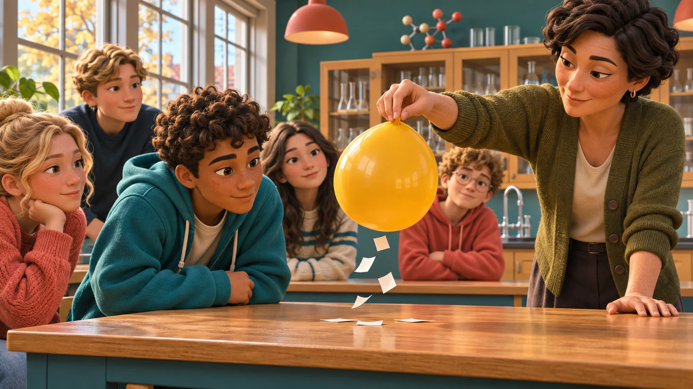
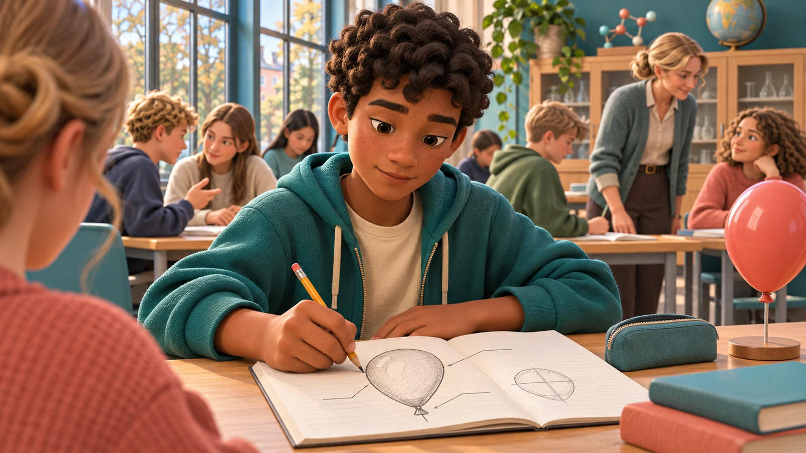
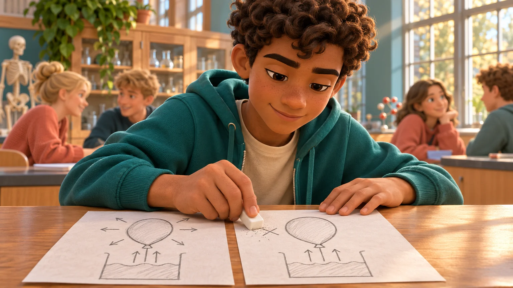

Slöjdsalen
Verktygen står redo
Jag visar hur man gör, visar tidigare arbeten och hjälper när du kör fast.

Slöjdsalen
Jag visar hur man gör, visar tidigare arbeten och hjälper när du kör fast.

Slöjdsalen
Du behöver själv tänka, mäta, såga, fila och putsa. Ingen lär sig såga av att någon annan gör alla snitt.

Slöjdsalen
I slöjden arbetar ni ofta i halvklass. Då är det lättare att ha uppsikt och ge hjälp när verktygen används.

Övergång
Vi kan lägga undan laborationsutrustningen och arbeta teoretiskt i helklass. Men vi kan inte lägga undan behovet av arbetsro.

NO-salen
Jag visar ett fenomen och ger dig begrepp att använda. Din uppgift är att förutsäga, rita och förklara vad som händer.

NO-salen
När du låter någon tala till punkt och ger andra tid att tänka får fler en chans att lära. Arbetsro kan också vara ett bra samtal.

Nästa lektion
Vad kan du göra redan idag så att både du och den som sitter bredvid får en bättre chans att lära?